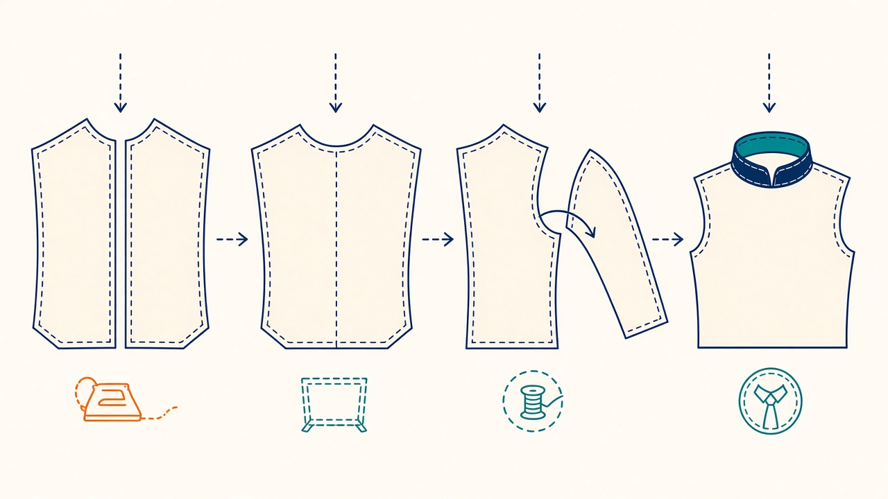
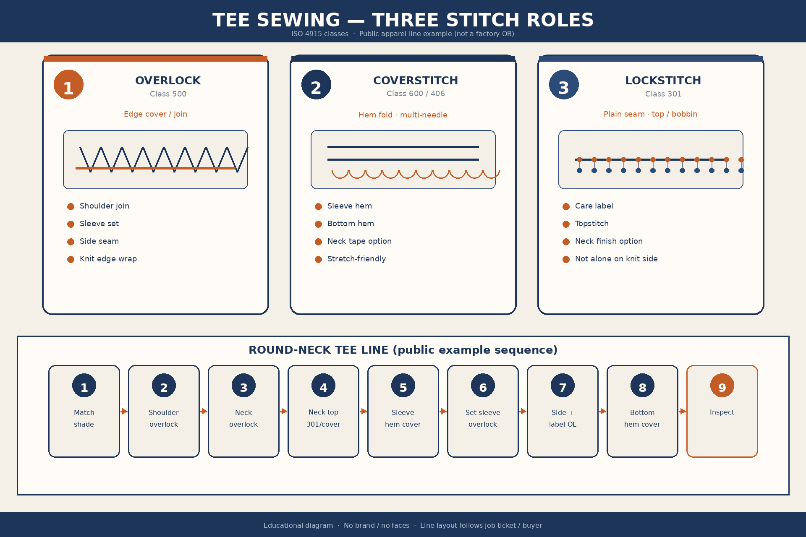
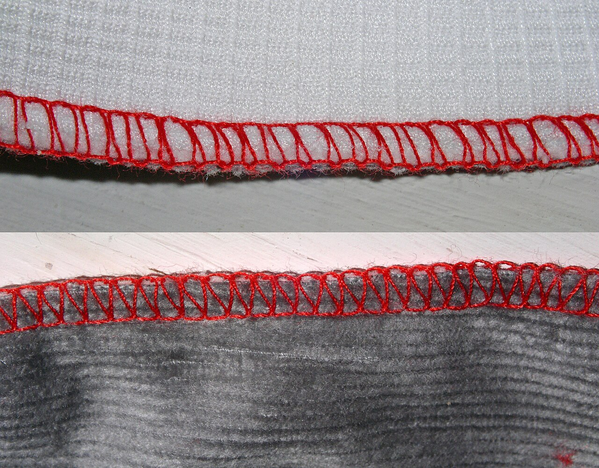

교육자료 · 봉제
티셔츠를 실로 이어 붙이는 칸. 먼저 쉬운 말 — 가장자리 감침, 단 접어 두줄, 일반 솔기. 이름은 그다음에.

먼저 쉬운 말로 가른다. 괄호는 나중에 나오는 이름.
어깨·소매달기·옆솔기. 잘라진 끝을 실로 감싸 풀어지지 않게 한다.
현장: 오버록·오바록 · (Class 500)
소매단·밑단. 단을 접어 겉에 두 줄(또는 세 줄)로 박는다.
현장: 후락·플랫락·커버 · (커버; 406·407은 Class 400, 602·605는 Class 600)
라벨·탑스티치·일부 넥 마무리. 위실과 아래실이 맞물려 평평한 한 줄.
현장: 본봉·플레인·싱글 · (Class 301)
니트 옆솔기를 일반 솔기(본봉)만으로 돌리면, 늘어날 때 실이 터질 수 있다(공개 업계). 라인 배치는 작지·바이어를 본다.
기종·실이 몇 가닥 들어가는지(콘수)는 봉제기기를 본다.


쉬운 말 다음에 붙는 이름. Coats / ISO 4915 공개 클래스. QC 수식·공수는 이 페이지로 정하지 않는다.
| 쉬운 말 | 이름 | English | 메모 |
|---|---|---|---|
| 일반 솔기 | 301 | lockstitch plain | 본봉. 위실+보빈. 라벨·탑 |
| 체인 솔기 | 401 | chainstitch | 실이 잘 늘어남. 일부 솔기·헴 |
| 가장자리 감침(3실) | 504/505 | 3-thread overedge | 니트 가장자리 |
| 단 접어 두줄(하단) | 406 | cover stitch 2-needle | Class 400. 헴 표면 2줄 |
| 단 커버 변종 | 602 | cover stitch variant | Class 600. 헴·바인딩 |
| 단 접어 세줄 | 605 | cover stitch 3-needle | Class 600. 넓은 헴. 현장 후락 계 |
공장마다 다름, 예시. 공개 apparel 라인 시퀀스. 특정 공장 OB 아님.
앞판·뒤판 음영 맞추기
가장자리 감침(오버록)
가장자리 감침(오버록)
일반 솔기 또는 커버
단 접어 두줄(커버)
가장자리 감침(오버록)
가장자리 감침(오버록)
단 접어 두줄(커버)
검사
작지·봉제 지시는 현장말. 바이어 스펙·이 교육은 둘을 나란히. 한쪽으로만 덮지 않는다.
| 현장말 | 쉬운 말 / 교육말 | 쓰면 안 되는 덤프 | 어디 |
|---|---|---|---|
| 에리 | 깃/칼라 | 넥·칼라 단 | 작지 / 교육 둘 다 |
| 소데 | 소매 | — | 작지 / 교육 둘 다 |
| 시보리 | 립/리브 | 홀치기 염색만으로 덮음 | 넥·커프·헴 |
| 바택 | 강화 바택 (bartack) | — | 강화 |
| 미싱 | 재봉기 | — | 설비 통칭 |
| 다이마루 | 환편 | — | 원단 칸 |
| 메리야스 | 니트/편성물 | — | 현장말 |
| 시아게 | 마무리 | — | 완성 단 |
| 나오시 | 수선 | — | 수선 |
| 기스 | 흠집 | — | 검사 |
| 간지 | 견본 | — | 샘플 |
| 와끼 | 옆솔기 | — | 사이드 |
| 우라 | 이면 | — | 원단 이면 |
| 오버록·오바록 | 가장자리 감침 / Class 500 | 본봉과 한 줄로 덮음 | 어깨·소매·사이드 |
| 후락·플랫락·커버 | 단 접어 두줄(커버; 406은 Class 400) | 오버록과 한 줄로 덮음 | 헴 |
| 본봉·플레인·싱글 | 일반 솔기 / Class 301 | 니트 사이드 본봉만 | 라벨·탑 |
교육말은 바이어·교재 영문. 현장말은 작지. 이 칸은 둘을 같이 적는다.
바늘이 건너뛰. 실 긴장·장력·바늘. (스킵스티치)
솔기 주변이 울룩. 장력·피드·스티치 불균형. (퍼커링)
넥이 파도처럼 울렁. 넥리브 장력·조직. (베이컨넥)
인치당 바늘땀 수 범위 벗어남. 바이어 스펙.
위치·방향 오차. 본봉 라벨 단.
위는 업계 공개 예시. 공장 불량코드는 작지·QC를 본다.
1인치 안에 바늘땀이 몇 개인지. 바이어 스펙에 적힌다. (SPI = stitches per inch)
공개 창은 바이어 스펙. 공장 바늘땀 수는 이 페이지로 정하지 않는다.
이 페이지는 공개 스티치 클래스 이름을 쓴다. QC 수식을 바늘땀 수로 대체하지 않는다.
이 페이지 숫자로 공장 규격을 정하지 않는다. 작지·바이어 스펙을 본다. 바늘땀 숫자창을 공장 공수로 쓰지 말 것.
교육용 영상은 이 페이지에 아직 없다.
가장자리 감침(오버록 Class 500)이 가장자리·솔기 본선.
후락·플랫락·커버 = 단 접어 두줄(coverstitch).
301 = lockstitch plain. 일반 솔기·본봉.
니트는 실이 잘 늘어나야 한다. 본봉만으로 사이드는 위험(공개 업계).
에리 = 깃/칼라. 소데=소매, 와끼=옆솔기.
SPI = stitches per inch = 인치당 바늘땀 수. 바이어 스펙. 공장 값은 이 페이지로 정하지 않는다.
베이컨넥 = 넥 물결. 공개 불량 예.
밑단·소매 헴은 커버 예시. 공장마다 다름.
하단 커버 406·407은 Class 400. 탑커버 602·605는 Class 600.